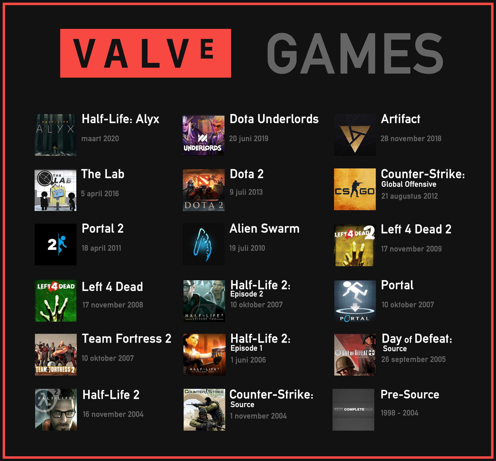
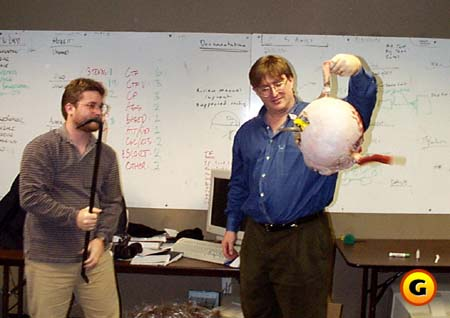
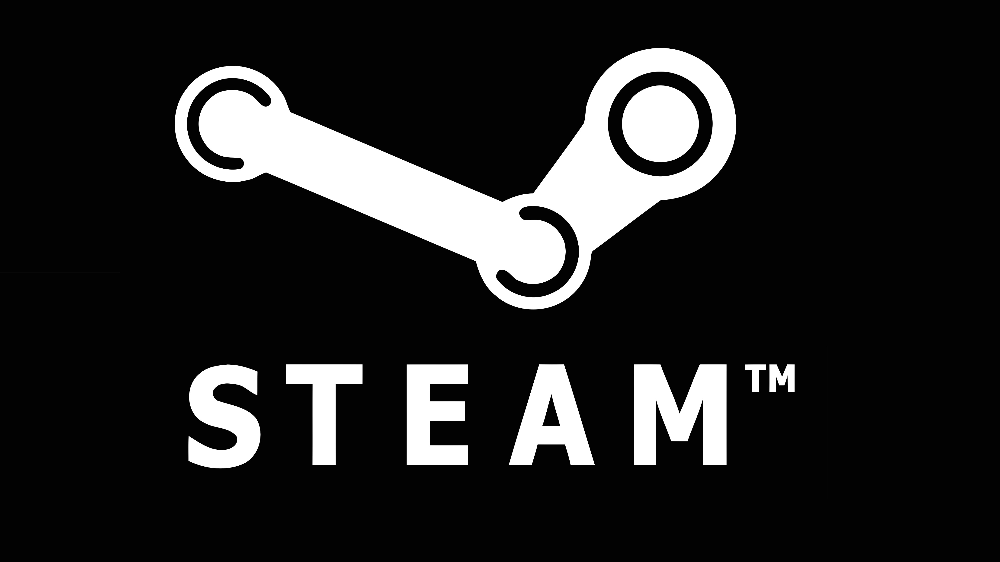
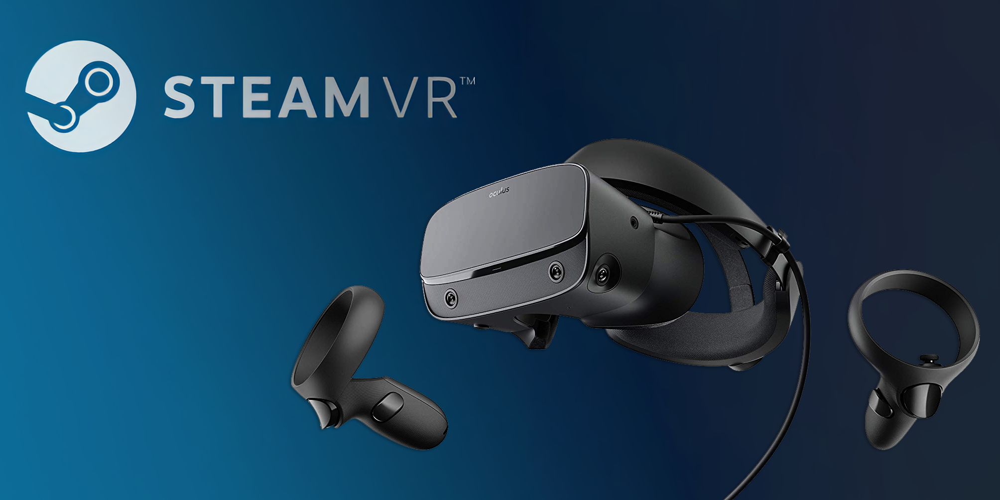
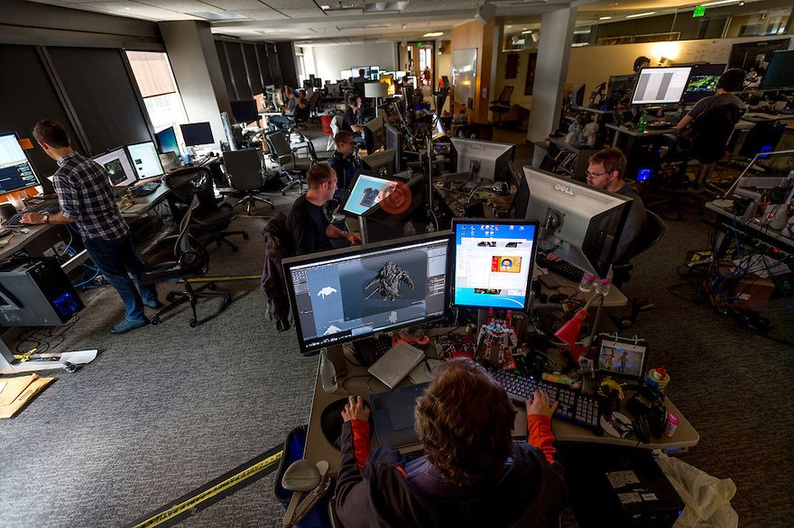
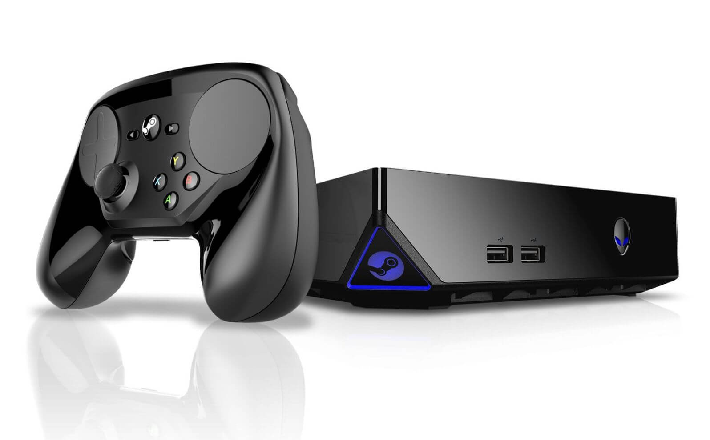
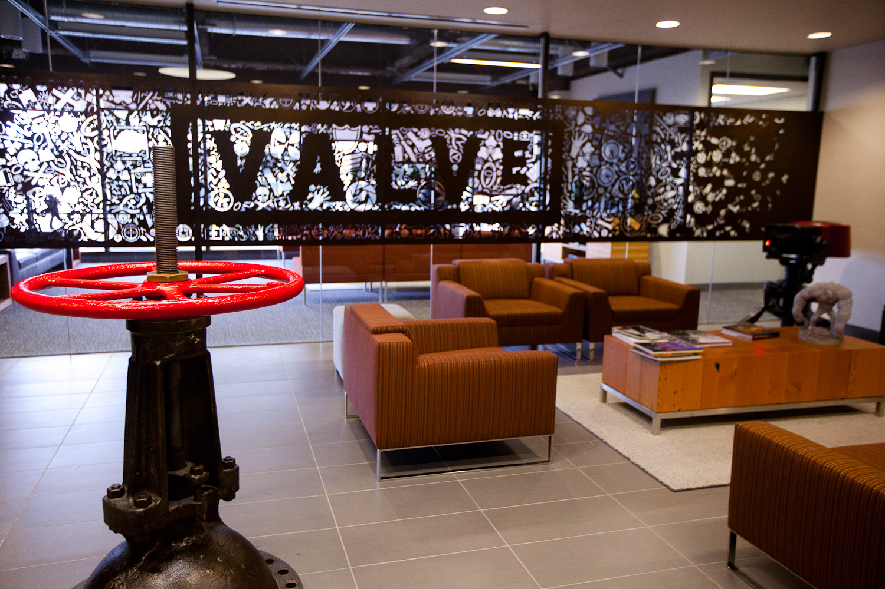

Introduction
Valve Corporation is one of the most prominent game developers in the world. Over its more than twenty-year history, the company has created numerous popular games, such as Half-Life, Counter-Strike, Dota 2, Portal, and Team Fortress 2. However, Valve not only creates games but also pays great attention to technology development and innovation in the gaming industry.
History
Valve Corporation was founded in 1996 by Gabe Newell and Mike Harrington, who had previously worked at Microsoft. The name "Valve" was chosen to emphasize the importance of the technologies that control the flow of information in the game. The first game released by the company was the first-person shooter Half-Life, which came out in 1998 and immediately became iconic and successful. After that, Valve released many other games that became legendary in the gaming industry.
Steam
However, Valve is famous not just for its games but for its platform for digital game distribution called Steam. In 2002, the company introduced this platform, which was the first of its kind on the market. Today, Steam is the largest platform for buying and downloading games in the world. Steam offers a wide selection of games for PC, Mac, and Linux, as well as social network features such as voice chats, messaging, user profiles, and more. On Steam, you can buy or download many games, including games from other developers.
VR Technologies
In addition, Valve pays great attention to the development of VR technologies. In 2016, the company released its first VR headset, the HTC Vive, which received many positive reviews. Developers also created the SteamVR toolset, which is used to create virtual reality.
Self-Organization
Another interesting feature of Valve is its non-traditional organizational structure. The company is built on principles of self-organization and equality among employees. Instead of having a rigid hierarchical structure, Valve attracts talented and creative developers from all over the world, who work on projects in a free-form manner. This working model allows the company to attract the best specialists in the industry, as well as create unique and interesting games and technologies. It has become one of the main reasons for Valve's success and attracted the attention of other companies in the gaming industry.
Steam-Machines
Another interesting project from Valve was Steam Machines - gaming PCs that run on the SteamOS operating system and are designed for use in the living room. This project was launched in 2013 as an attempt by Valve to expand its presence in the gaming device market but did not gain widespread popularity. The concept behind Steam Machines was to create devices that would be available at a price comparable to Sony and Microsoft consoles but with PC capabilities. However, the project faced problems such as a limited selection of games and the need to use the specialized SteamOS operating system. Moreover, there were already devices based on Windows on the market, which made competition for Steam Machines even more challenging. Ultimately, Valve discontinued the sale of Steam Machines in 2018.
Conclusion
Valve Corporation is one of the most successful game developers and innovators in the gaming industry. Its Steam platform has become the largest in the world, and VR technologies and non-traditional organizational structure help the company continue to develop and remain competitive. Valve continues to work on new technologies and games, so its contribution to the industry will continue to grow in the future.
